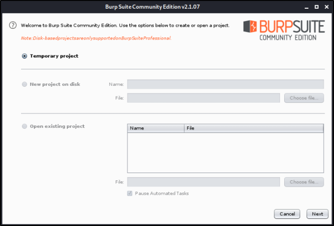
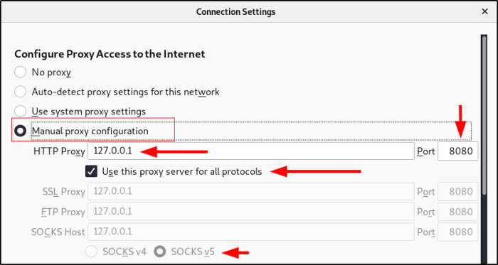
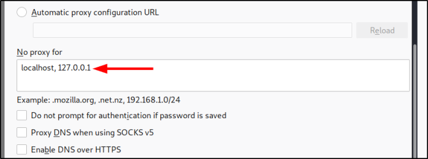
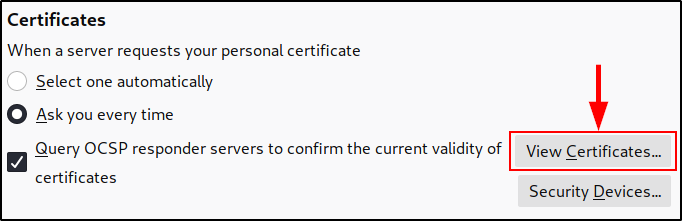
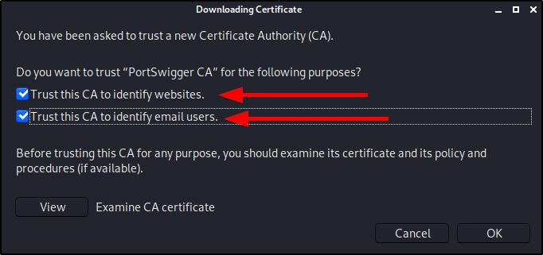
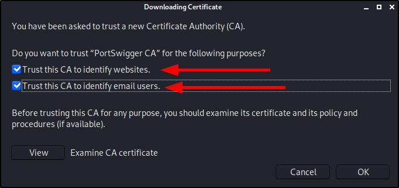
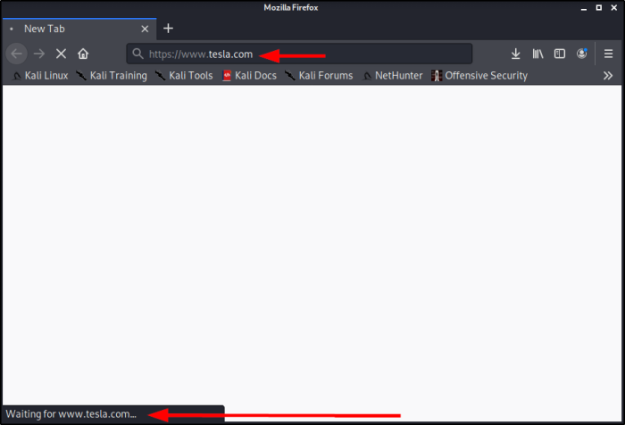

Information Gathering with Burp Suite
Burp Suite:
https://portswigger.net/burp


How to set Burp Suite:
We need to set up the Browser (In example, Firefox) Proxy Server





Next, we need to add the certificate to the web browser:


(Firefox)



(Check both)
 

(Now you should see the certificate imported)


Burp Suite: Usage


(Go to Proxy Tab to see the request, if you click Forward you will forward it and the browser will send it) 

(You can forward or drop requests, you can see the tesla request:)